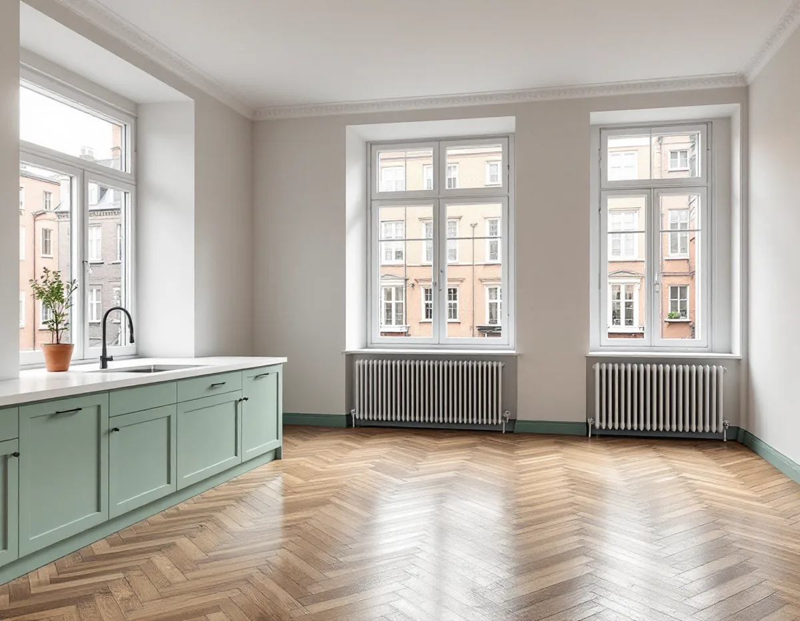
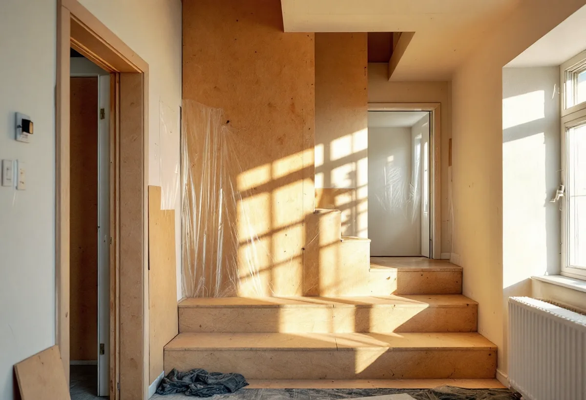

Platsbesök
Vi går igenom lägenheten och föreningens regler för renovering.
När en lägenhet ska göras om från golv till tak berörs ofta flera av de åtgärder som bostadsrättslagen kräver styrelsens tillstånd för. Geal Entreprenad AB totalrenoverar bostadsrätter på Kungsholmen och sköter underlaget till styrelsen, samordningen i huset och arbetet i lägenheten med en kontakt för hela projektet.

Stadens områdesfakta för Kungsholmens stadsdelsområde visar 44 554 bostäder år 2024. Av dem är 30 598 bostadsrätter, medan bara 337 ligger i småhus. Bland lägenheterna i flerbostadshus och övriga hus finns 5 265 utan kök och 11 314 ettor.
Med de siffrorna gäller en totalrenovering här oftast en lägenhet i ett flerbostadshus, och många av lägenheterna är små, så varje förändring av planlösningen märks. Att flytta ett kök, göra plats för ett större badrum eller bygga in en sovalkov påverkar både lägenheten och huset, och därför börjar arbetet i föreningen, inte med rivningen.

Enligt bostadsrättslagen 7 kap. 7 § får du inte utan styrelsens tillstånd göra ingrepp i en bärande konstruktion, installera eller ändra ledningar för avlopp, värme, gas eller vatten, installera eller ändra ventilation, ändra eldstad eller rökkanal eller på annat sätt påverka brandskyddet, eller göra någon annan väsentlig förändring av lägenheten. Har lägenheten särskilda historiska, kulturhistoriska, miljömässiga eller konstnärliga värden krävs tillstånd för varje åtgärd som påverkar ett sådant värde.
Styrelsen får vägra bara om åtgärden är till påtaglig skada eller olägenhet för föreningen, och ett tillstånd får förenas med villkor. Är du missnöjd med beslutet kan du begära att hyresnämnden prövar frågan. I en totalrenovering berörs oftast flera punkter samtidigt, så vi tar fram en samlad beskrivning med ritning som du lämnar till styrelsen innan något bokas.
Ska köket flyttas till en annan del av lägenheten är ventilationen ofta den svåra frågan. Stockholms stad påpekar att ett kök behöver tillräcklig frånluft och ska uppfylla kraven för imkanal, och att badrumskanalens sammanlagda mått måste räcka om den ska användas som kombinerad imkanal och frånluftskanal. Staden råder dig att tidigt rådgöra med skorstensfejarmästaren, och i en bostadsrätt att kontakta styrelsen innan du börjar planera flytten.
Stockholms stad skriver att du behöver göra en anmälan och vänta på startbesked om ändringen påverkar byggnadens tekniska egenskaper, till exempel bärande konstruktion, brandskydd eller ventilation. Vill du dela en lägenhet i två krävs bygglov, eftersom det då tillkommer en bostad. Ändrar du bara hur rummen används och inga tekniska egenskapskrav påverkas behövs ingen anmälan.
Staden råder dig att kontakta styrelsen i god tid och att gärna informera grannarna om vad du planerar. Om badrummet och stammarna i husen finns mer under badrumsrenovering på Kungsholmen, om golven under golvläggare på Kungsholmen och om väggar och tak under målare på Kungsholmen.
Bostadsrättslagen 7 kap. 9 § säger att du ska se till att de som bor omkring inte utsätts för störningar som i sådan grad kan vara skadliga för hälsan eller annars försämra deras bostadsmiljö att de inte skäligen bör tålas. Du ska också rätta dig efter de särskilda regler som föreningen meddelar.
I praktiken handlar det om att planera de bullriga momenten, skydda trapphus och hiss och hålla dammet inne i lägenheten. Vi går igenom föreningens ordningsregler innan arbetet börjar, lägger rivning och bilning på de tider som gäller och sätter upp information i trapphuset om vad som pågår.
Ordningen i lägenheten följer samma logik som i ett hus, men på mindre yta. Först rivs det som ska bort och material som ska sparas skyddas. Sedan dras nya ledningar och ventilation medan väggar och golv är öppna, därefter byggs badrum och kök och sist läggs golv och målas väggar och tak. I en liten lägenhet går det sällan att bo kvar under arbetet, så vi räknar tidplanen så att du vet när du kan flytta tillbaka.
Vi går igenom lägenheten och föreningens regler för renovering.
Ritning och beskrivning av alla åtgärder som kräver tillstånd.
Varje del redovisas för sig, med arbete och material åtskilda.
Påverkas tekniska egenskaper görs en anmälan innan arbetet startar.
Trapphus och hiss skyddas, och el och VVS utförs via behöriga.
Vi går igenom lägenheten med dig och lämnar underlag till föreningen.
I en bostadsrätt ger Skatteverket rotavdrag för arbete innanför lägenhetens tak, väggar och golv som du ansvarar för enligt stadgarna, till exempel att riva innerväggar och bygga om planlösningen. Undantag gäller bland annat när två bostadsrätter slås ihop eller delas, när bostadsytan utökas eller när en oinredd biyta blir bostad. Att bygga om, reparera eller underhålla en balkong ger inget avdrag.
Företaget får dra av högst 30 procent av arbetskostnaden på fakturan. Rotavdraget är högst 50 000 kr per person och år och högst 75 000 kr tillsammans med rutavdrag. Material och resor ger inget avdrag. Geal drar avdraget direkt på fakturan.
Hur mycket av planlösningen som ändras, om ledningar och ventilation berörs, föreningens krav på skydd och arbetstider och vilken standard du väljer påverkar mest. Efter ett gratis platsbesök får du ett skriftligt kostnadsförslag.
Renovera hela huset eller lägenheten.
Villarenovering →Takbyte, takbesiktning och plåtarbeten.
Takläggare på Kungsholmen →Plåttak i stenstaden och funkis i Fredhäll.
Takrenovering på Kungsholmen →Gårdshus vid villorna på Stora Essingen.
Attefallshus på Kungsholmen →Stambyte, stämmobeslut och 30-talshus.
Badrumsrenovering på Kungsholmen →Föreningens stambyte.
Byggföretag på Kungsholmen →Målning av puts och gårdsfasader.
Fasadmålning på Kungsholmen →Slätputs på funkishus, lagad utan synliga skarvar.
Fasadrenovering på Kungsholmen →Stenhusen, funkishusen och bygglovet.
Fönsterbyte på Kungsholmen →Fönstret i bostadsrätten, insida och beslag.
Fönsterrenovering på Kungsholmen →Stegljud, golvval och styrelsens tillstånd.
Golvläggare på Kungsholmen →Slipa och lacka golvet i bostadsrätten.
Golvslipning på Kungsholmen →Fläkten, kanalen och föreningen.
Köksrenovering på Kungsholmen →Funkislägenheter, stadgar och ROT i bostadsrätten.
Målare på Kungsholmen →Huvar, skorstenar och genomföringar.
Plåtslagare på Kungsholmen →Förvaring och platsbyggt i små lägenheter.
Snickare på Kungsholmen →Villorna på Stora Essingen.
Takbyte på Kungsholmen →Ny tapet på putsade lägenhetsväggar.
Tapetsering på Kungsholmen →Uterum, kupor och skärmtak.
Tillbyggnad på Kungsholmen →